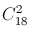

The Russian Chess Championship is made up of one round. How many games are played if 18 chess players participate?
The first way. Each participant must play 17 games, in each game two people play. Therefore, there are $18 \times 17$ /2 = 153 games in total.
The second way. In each game one point is up for grabs. Suppose that all games end in a draw. Then each participant will gain 17/2 = 8.5 points. Thus, the total number of points, and hence the total number of games is $18 \times 8.5$ = 153.
The third way. The number of games is equal to the number of pairs of participants, that is  .
153 games.